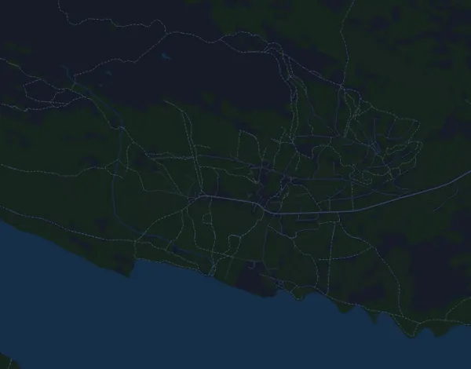

Ottsjö 12K (1 augusti)
- Distancia
- 12 km
- Desnivel positivo
- ↑ 283 m
- Punto más alto
- 726 m s. n. m.
- Superficie
- Trail y sendero
- Perfil
- Ondulado
- Salida
- 13:00 h
Perfil de altitud
Prepárate con Mila
Mila es un coach de running en una app. Si añades una carrera a tu plan, el coach planifica tus semanas hasta la salida según tu forma y te da un pronóstico de tiempo y un plan de ritmo, hidratación y energía para el recorrido.

La sesión justa. El día justo.
El recorrido

Sobre el recorrido
Ottsjö 12K (1 augusti) es una carrera de trail de 12 km (Årefjällen, Suecia). El recorrido acumula 283 m de desnivel positivo y 288 m de desnivel negativo, 24 m por km, así que es ondulado. El punto más alto está a 726 m sobre el nivel del mar y el más bajo a 496 m.
La subida más grande empieza en el km 0,0: 188 m de desnivel en 2,1 km, con un 9,1 % de media, hasta los 726 m. En total, el recorrido tiene 3 subidas de al menos 25 m; la última empieza en el km 11,3.
En la app Mila, el coach describe el recorrido en detalle en tu idioma y planifica tu ritmo y tu avituallamiento.
Subidas
| Empieza en | Longitud | Desnivel | Pendiente | Cima (m s. n. m.) |
|---|---|---|---|---|
| km 0,0 | 2,1 km | 188 m | 9,1 % | 726 |
| km 2,5 | 1,8 km | 26 m | 1,4 % | 726 |
| km 11,3 | 880 m | 29 m | 3,3 % | 535 |
Antes de la salida
Horas de salida
- 13:00 h
Lugar de salida
Ottsjö
Tabla de ritmos
Ottsjö 12K (1 augusti) en 1:00:00 – ritmo por km y tiempos de paso
5:00 min/km · km 2,5: 12:30 · km 5: 25:00 · km 7,5: 37:30 · km 10: 50:00 · meta: 1:00:00
Ottsjö 12K (1 augusti) en 1:15:00 – ritmo por km y tiempos de paso
6:15 min/km · km 2,5: 15:38 · km 5: 31:15 · km 7,5: 46:53 · km 10: 1:02:30 · meta: 1:15:00
Ottsjö 12K (1 augusti) en 1:30:00 – ritmo por km y tiempos de paso
7:30 min/km · km 2,5: 18:45 · km 5: 37:30 · km 7,5: 56:15 · km 10: 1:15:00 · meta: 1:30:00
Los tiempos suponen un ritmo constante de principio a fin. Es pura aritmética, no un pronóstico: en las subidas, entre la gente y en los avituallamientos el ritmo varía.
Preguntas frecuentes
¿Cuándo es Ottsjö 12K (1 augusti)?
Ottsjö 12K (1 augusti) se celebra el domingo, 1 de agosto de 2027. Comprueba la fecha y la hora de salida con el organizador.
¿A qué hora sale Ottsjö 12K (1 augusti)?
Según el organizador: 13:00 h.
¿Cuánto mide Ottsjö 12K (1 augusti) y cuánto desnivel tiene?
La carrera tiene 12 km, con 283 m de desnivel positivo y 288 m de desnivel negativo. El punto más alto está a 726 m sobre el nivel del mar.
¿Cómo es el recorrido de Ottsjö 12K (1 augusti)?
El recorrido es ondulado, con 24 m de desnivel por km de media. Tiene 3 subidas de al menos 25 m; la mayor empieza en el km 0,0: 188 m en 2,1 km. La salida y la meta están en el mismo lugar. Se corre por senderos y caminos.
¿Cómo reparto el ritmo en Ottsjö 12K (1 augusti)?
Busca un esfuerzo constante más que un ritmo constante: deja que el ritmo baje en las subidas, recupéralo cuando el terreno se allane y contente en los primeros kilómetros. Las subidas más grandes empiezan en el km 0,0, km 2,5 y km 11,3. En Mila tienes un plan de ritmo para este recorrido, según tu propia forma.
Más carreras como esta
Más carreras cerca
- 27K1 de agosto de 2027 · Årefjällen, Suecia
- Minimaraton 1500 m 1,5 km31 de julio de 2027 · Årefjällen, Suecia
- Minimaraton 800 m 0,8 km31 de julio de 2027 · Årefjällen, Suecia
- Åre Vertical K 5 km3 de agosto de 2027 · Årefjällen, Suecia
- Fjällmaraton 100K5 de agosto de 2027 · Årefjällen, Suecia
- Vivobarefoot 7K5 de agosto de 2027 · Årefjällen, Suecia
Prepárate con Mila
La sesión justa. El día justo.
Los datos proceden del archivo del recorrido y de la información del organizador. Comprueba la fecha, las horas de salida y el reglamento con el organizador.
Mila no está vinculada al organizador ni a los patrocinadores de la carrera, ni está patrocinada o avalada por ellos. Los nombres y las marcas pertenecen a sus propietarios. ¿Organizador o titular de derechos? Solicitar un cambio o la retirada